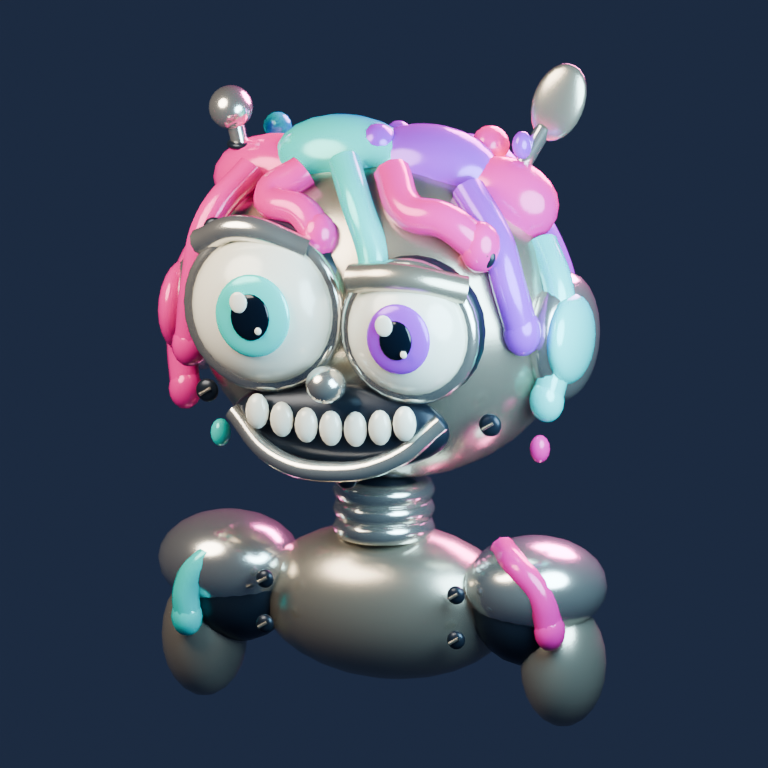

NIEMA KOMEDIA · PILOT 01
Aktualizacja tańca
Jedna noga już gotowa. Reszta robota jeszcze nie.
Krótka komedia z autorskimi efektami dźwiękowymi, bez podkładu muzycznego.

Ładowanie filmu 3D…
NIEMA KOMEDIA · PILOT 01
Jedna noga już gotowa. Reszta robota jeszcze nie.
Krótka komedia z autorskimi efektami dźwiękowymi, bez podkładu muzycznego.

Ładowanie filmu 3D…